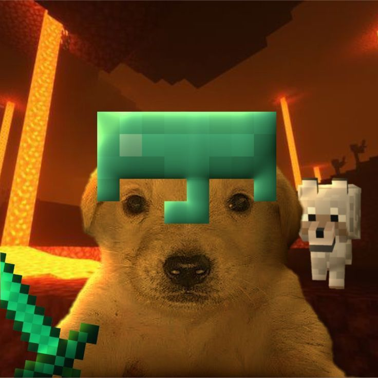
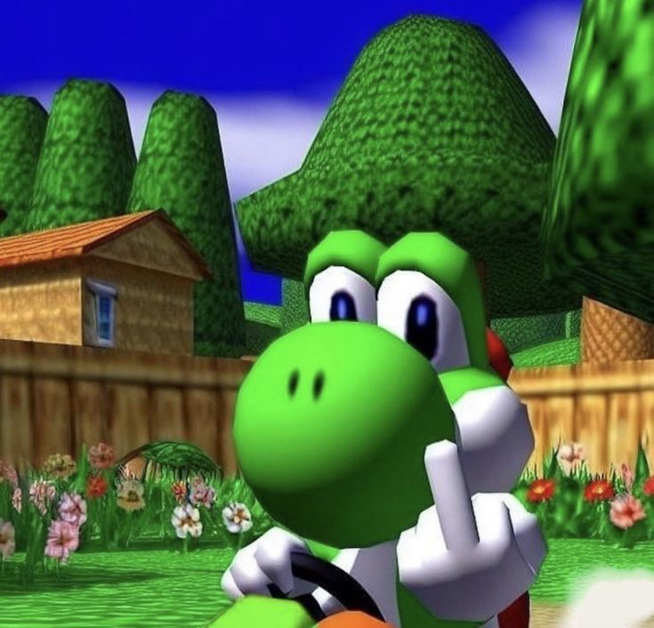
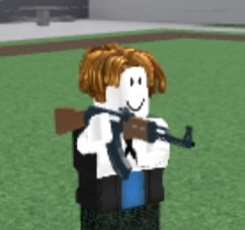
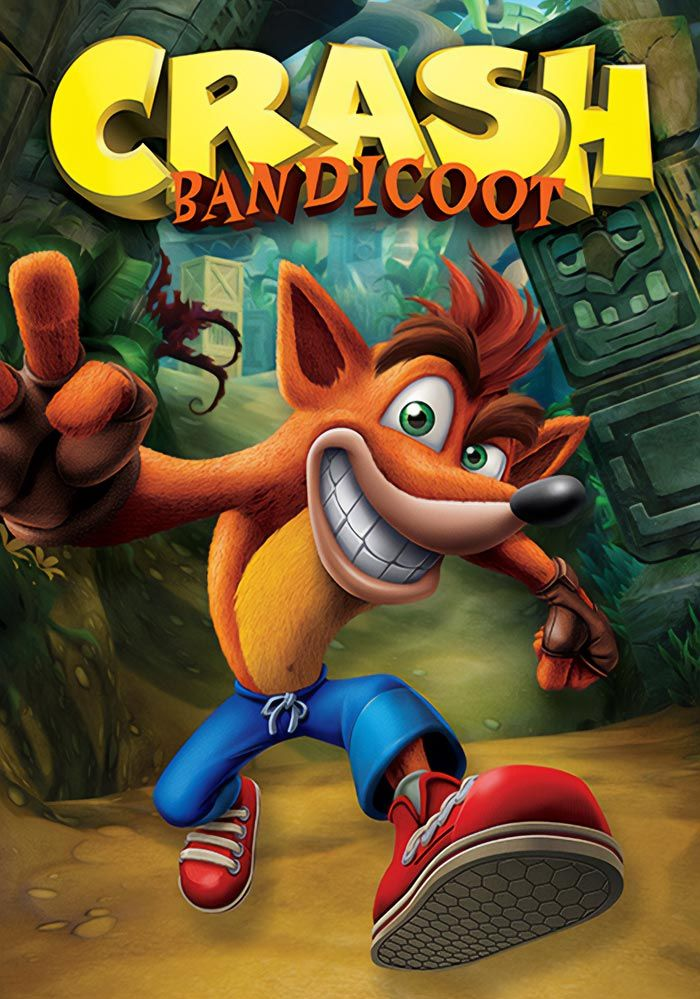

Los juegos han acompañado al ser humano desde tiempos antiguos, convirtiéndose en una forma de diversión, aprendizaje y convivencia. Existen muchos tipos de juegos, y cada uno ofrece experiencias diferentes que despiertan emociones, habilidades e imaginación. Algunos se practican en silencio y concentración; otros llenan el ambiente de risas, competencia y emoción.
Entre los más populares se encuentran los videojuegos, mundos digitales donde las personas pueden convertirse en héroes, exploradores, deportistas o guerreros. A través de una pantalla, los jugadores viven aventuras increíbles, enfrentan desafíos y descubren historias que parecen no tener fin. Estos juegos pueden ser de acción, estrategia, terror, deportes o aventura, y cada uno transporta al jugador a una experiencia distinta.
También existen los juegos de mesa, tradicionales compañeros de reuniones familiares y tardes con amigos. Sobre un tablero o con simples cartas, las personas ponen a prueba su inteligencia, paciencia y creatividad. Juegos como el ajedrez, el dominó o Monopoly demuestran que no se necesita tecnología para vivir momentos inolvidables.
Por otro lado, los juegos deportivos unen la diversión con el esfuerzo físico. En ellos, el cuerpo se mueve con energía mientras la mente se concentra en alcanzar la victoria. El fútbol, el baloncesto y el voleibol son ejemplos de actividades que fortalecen el trabajo en equipo y el espíritu competitivo.
Asimismo, los juegos de lógica y rompecabezas desafían la mente humana. Cada pieza colocada y cada problema resuelto producen satisfacción y enseñan a pensar con calma y estrategia. Son juegos donde la inteligencia se convierte en la principal herramienta.
Finalmente, están los juegos tradicionales y recreativos, aquellos que pasan de generación en generación. Las escondidas, la rayuela o saltar la cuerda guardan recuerdos de la infancia y demuestran que la diversión puede encontrarse en las cosas más simples.
